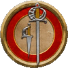
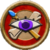

下列武器和冒险装备尤其适合本书介绍的族裔以及职业，但所有角色都可能对其感兴趣并有效地利用上。
表6-1：近战武器 Melee Weapons
| 军用武器 |
价格 |
伤害 |
负载 |
占用手 |
武器组 |
武器特征 |
| 剑杖 Sword Cane |
5gp |
1d6 P |
1 |
1 |
剑 |
灵巧、隐蔽、娴熟 |
| 罕见军用武器 |
价格 |
伤害 |
负载 |
占用手 |
武器组 |
武器特征 |
| 爪刃 Claw Blade |
2gp |
1d4 S |
L |
1 |
匕首 |
灵巧、猫族、致命d8、缴械、娴熟、多用P |
| 禅杖 Khakkara |
2gp |
1d6 B |
1 |
1 |
棍棒 |
猛推、双手d10、多用P |
| 天狗风刃 Tengu Gale Blade |
4gp |
1d6 S |
L |
1 |
剑 |
灵巧、缴械、娴熟、天狗 |
| 肋差 Wakizashi |
1gp |
1d4 S |
L |
1 |
剑 |
灵巧、致命d8、娴熟、多用P |
表6-2：远程武器 Ranged Weapons
| 罕见军用武器 |
价格 |
伤害 |
射程 |
装填 |
负载 |
占用手 |
武器组 |
武器特征 |
| 绳球 Bola |
5sp |
1d6 B |
20尺 |
- |
L |
1 |
投石索 |
非致命、远程摔绊、投掷 |
| 罕见进阶武器 |
价格 |
伤害 |
射程 |
装填 |
负载 |
占用手 |
武器组 |
武器特征 |
| 大弓 Daikyu |
8gp |
1d8 P |
80尺 |
0 |
2 |
1+ |
弓弩 |
助进 |
表6-3：冒险装备 Adventure Gear
| 物品 |
价格 |
负载 |
占用手 |
| 铜耳 Brass Ear |
1gp |
- |
1 |
| 隐蔽鞘 Concealed Sheath（3级） |
25gp |
- |
- |
| 侦探工具包 Detective's Kit（3级） |
25gp |
1 |
2 |
| 决斗披肩 Dueling Cape |
5sp |
L |
1 |
| 网 Net |
1gp |
1 |
2 |
| 格挡鞘 Parrying Scabbarde |
5sp |
L |
1 |
| 潜望镜 Periscope（2级） |
25gp |
l |
2 |
新武器特征 New Weapon Traits
隐蔽
Concealable：该武器设计地非常不起眼，或是能够轻易被隐藏起来。你在隐藏或伪装具有隐蔽特征的武器时所使用的贼活检定以及贼活DC上获得+2环境加值。
远程摔绊 Ranged
Trip：你可以利用该武器使用运动技能以摔绊一个位于武器第一射程增量内的目标。你可以将武器在攻击骰上的物品加值也加入摔绊检定中。如同使用近战武器进行摔绊一样，远程摔绊武器在进行摔绊时也不会造成任何伤害。该特征通常只出现在投掷武器上。
武器描述 Weapon Description
绳球 Bola：绳球是一种在一根粗绳的两端捆绑上重物的武器，能够用来钝击敌人或缠住敌人的腿。
爪刃 Claw
Blade：这种手持武器由三根从指间伸出的平行利刃组成，看起来就像是制造爪刃的猫族的天生利爪。爪刃能够让缺少合适利爪的猫族也能使用利爪进行战斗。
大弓
Daikyu：这种不对称的弓由竹子、木头和皮革粘合在一起制成，高6尺以上。在骑乘时使用大弓会使你的射界局限在你的左侧。
禅杖
Khakkara：这根杖的顶端是尖锐的金属圈，上面挂着许多叮当作响的小环，在禅杖运动时发出噪音，让你能够彰显你的存在并在你移动时吓退野生动物。
剑杖 Sword
Cane：这支纤细的细剑一半的剑能够藏在一根木制或金属制的手杖形剑鞘中。剑杖是一种十分不起眼的武器，能够轻易突破安检或带入上流社交活动中。剑杖在入鞘状态通常长4尺，其剑柄也常常安置着木制或金属制的装饰。
天狗风刃 Tengu Gale
Blade：这种如风扇一般的剑是为天狗族裔设计的，包含了五把剑柄互相连接的宽刃。天狗水手也会将风刃当成风向标的替代品来使用，只要将风刃轻轻地在高处悬挂，就可以得知目前的风向。
肋差 Wakizashi：这种单边开锋的短剑通常是与打刀配对使用的。
装备描述 Gear Description
铜耳 Brass
Ear：铜耳是一种喇叭形短管，其中一头足够窄，能够舒适地插入耳道之中。当使用铜耳透过门、窗、薄墙以及类似障碍聆听对面的时候，如果这种障碍会使你用来聆听对面的察觉检定的DC提升，则将DC的提升量降低至通常的一半。
隐蔽鞘 Concealed
Sheath：这种皮革鞘足够容纳一件至多负载L的物品，且通常容纳的都是匕首、魔杖、盗贼工具、以及类似的物品。你可以将其附着在靴子内部、护臂或袖子的内侧、或其他不显眼的位置。你在隐蔽鞘中隐藏或伪装一件物品所需的贼活检定以及贼活DC上获得+1物品加值。
侦探工具包 Detective's
Kit：这件皮革背包中含有一些空瓶、一对镊子、一些小块亚麻布、一组黄铜卡尺、一卷绑有绳结的用来测量长度的细绳、几根粉笔、一支墨水笔、以及一本空白笔记本用于记笔记。侦探工具中的每一件物品都具有极高的品质，因此能够为调查犯罪现场、搜集线索以及其他类似细节的检定上提供+1物品加值。如果你穿戴着它，则只需要1只手
决斗披肩 Dueling
Cape：你可以以一个交互动作从肩膀上拉下你的披肩并裹在手臂上。当通过这种方式挥舞着决斗披肩，披肩会占用这只手臂和手，因此你不能使用这只手持握其他任何物品。当你这么做时，你可以花费一个动作以防御姿态持握着披肩，使你在AC检定以及用来进行虚招的欺骗检定中获得+1环境加值，直到你的下一回合开始。
网
Net：你可以直接使用一张网或将其附着在一根绳索上。当它被附着在绳索上时，你可以使用网来擒拿一个距离10尺内的中体型或更小的生物（而不只是邻接的生物）。只要该生物保持在你的10尺距离内，且你仍然持握着网，你就能继续进行擒拿以维持对目标的擒抱。除非你邻接被擒抱的生物，否则该生物在逃脱检定中会获得+2环境加值，该生物也可以尝试DC16的运动检定以彻底破拆这张网。一旦目标不再陷入擒抱，这张网便变得十分笨拙，直到使用一个占用两只手的专注动作以折叠网；如果使用一张未经折叠的网，用网进行的擒拿检定便要承受-2罚值。当这张网没有附着到绳索上时，你可以对20尺内的中体型或更小的目标进行一次远程攻击骰。命中时，目标陷入措手不及并在速度上承受-10尺环境罚值，直到其成功逃脱；如果达成重击，目标被禁足直到其成功逃脱。逃脱DC是16。邻接目标的生物可以进行交互以移除网。
格挡鞘 Parrying
Scabbard：在你拔出武器的交互动作中，你可以同时拔出这根加固过的剑鞘，使用你的一只手挥舞武器，另一只手挥舞剑鞘。格挡鞘可以用来防御，如同具有格挡特征的武器一样：你可以花费一个动作将其置于防御姿态中，在AC上获得+1环境加值，直到你的下一回合开始。格挡鞘能够适配所有能够单手持握的剑。
潜望镜
Periscope：这根2尺长的管子的两端都安置了可以调节角度的镜子。当这两面镜子的角度正确校准时，你就能在掩体内越过障碍观察外面的事物。这不能为你提供充分的效果线以瞄准转角另一侧的生物。
职业装备包 Class Kits
如果你想要快速决定你要怎么花费起始资金以武装这本书的新职业时，你可以从下列装备包中开始。盔甲、武器和装备词条涵盖了基础装备，而可选词条提供了一些用来消耗剩余资金的选项。其中冒险装备包内含有1个背包、一个铺盖卷、10根粉笔、燧石和铁片、50尺麻绳、2周份口粮、肥皂、5根火把、以及一袋水袋。

调查员
价格：9gp，2sp；负载：3B，5L；
剩余资金：5gp，8sp
盔甲：镶嵌皮甲
武器：闷棍、短剑、弩（20支弩矢）
装备：冒险装备包、撬棍
可选：炼金工具宝（3gp）、简易手铐（3gp）、书写套件（1gp）

浪客
价格：8gp，7sp；负载：3B，3L；
剩余资金：6gp，3sp
盔甲：皮甲
武器：手弩（20支弩矢）、细剑
装备：冒险装备包
可选：小圆盾（1gp）、决斗披肩（5sp；见上文）、精致服装（2gp）、抓钩（1sp）、格挡匕首（5sp）

先知
价格：5gp，5sp，2cp；负载：3B，3L；
剩余资金：9gp，4sp，8cp
盔甲：镶嵌皮甲
武器：硬头锤、投石索（20颗投石索弹丸）
装备：冒险装备包、撬棍
可选：钢盾（2gp）、医疗工具包（5gp）
女巫
价格：2gp，3sp，2cp；负载：2B，6L；
剩余资金：12gp，6sp，8cp
武器：镰刀、投石索（20颗投石索弹丸）、木杖
装备：冒险装备包、探索者服装、施法材料包
可选：炊具（1gp），医疗工具包（5gp）